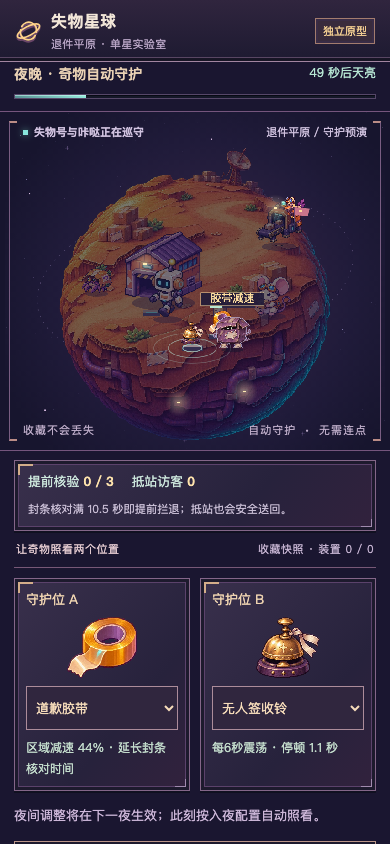
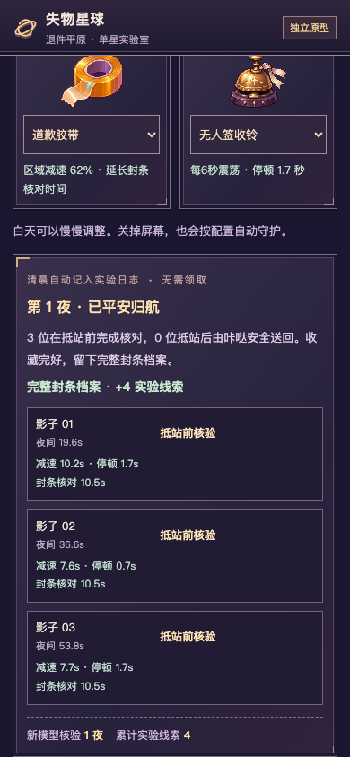
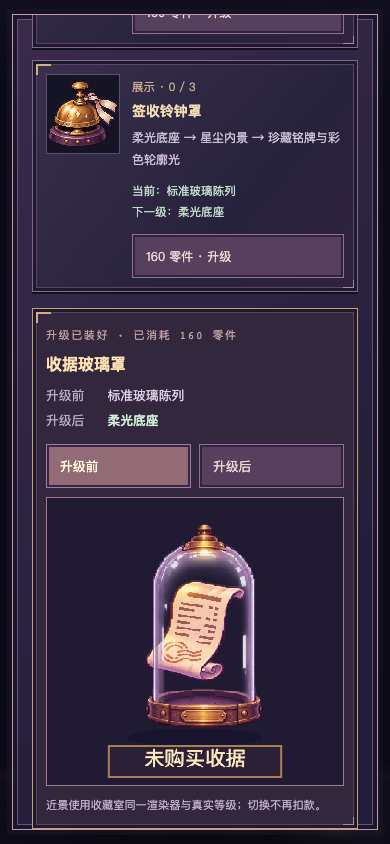
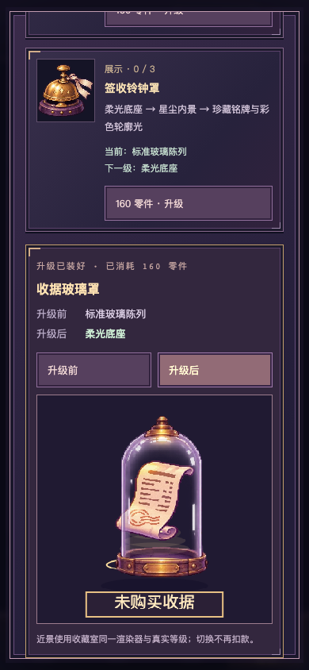
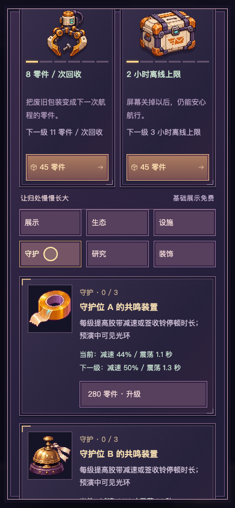

失物星球 V0.2.1 · 守护过程与结果同源
Git e9c5ce6 · TapTap开发自测424300 · PR #2继续Draft
截图和录像来自390×844桌面移动触控仿真，不是手机实拍。录像用游戏“预演夜晚”进入，随后完整60秒夜晚按真实墙钟播放。测试收藏与研究快照只用于对照，不改用户存档。新版真机仍待扫码审核。
审核逐项说明 · 14组策略表 · 实际录像与性能JSON · 测试/CI摘要
| 同一晚配置 | 抵站前核验 | 抵站后安全送回 | 实验线索 |
|---|---|---|---|
| 空槽 | 0 | 3 | 1 |
| 单件基础胶带 | 1 | 2 | 2 |
| 双件基础 | 2 | 1 | 3 |
| 双件满级 | 3 | 0 | 4 |
四配置真实连续对照



真实付款后的展柜近景对照



56项单元、80项浏览器及包源码CI通过；手机亮度、长时运行与趣味性仍待实机审核。夜守保持独立可关闭，第二星球不扩张。